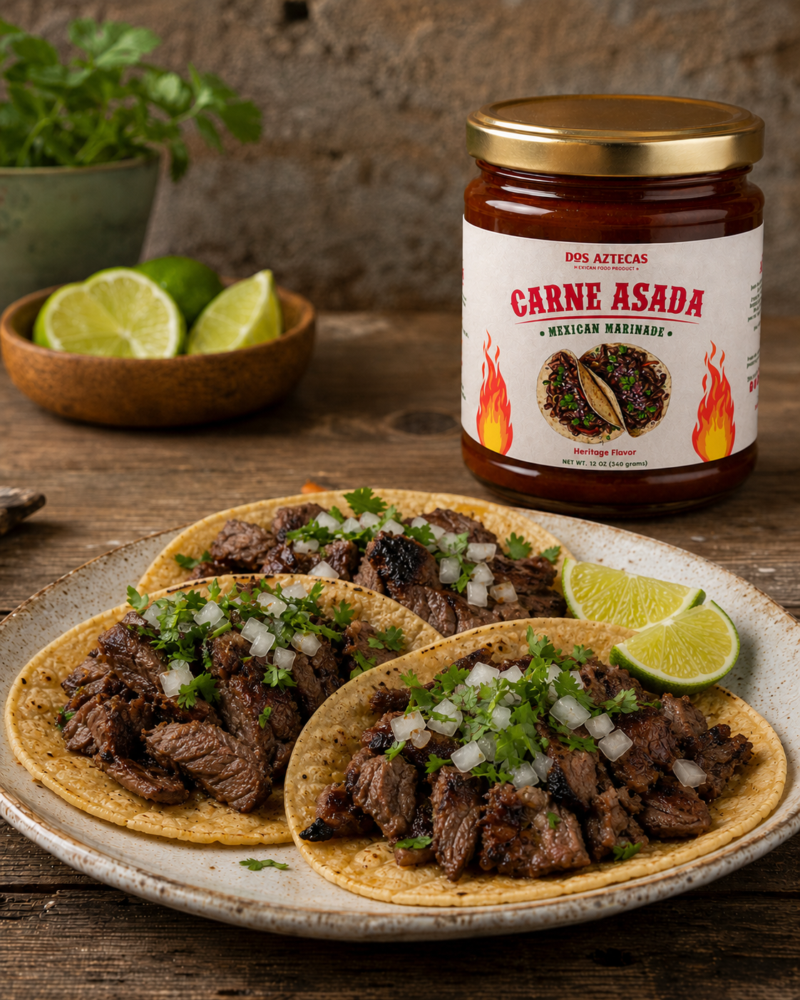
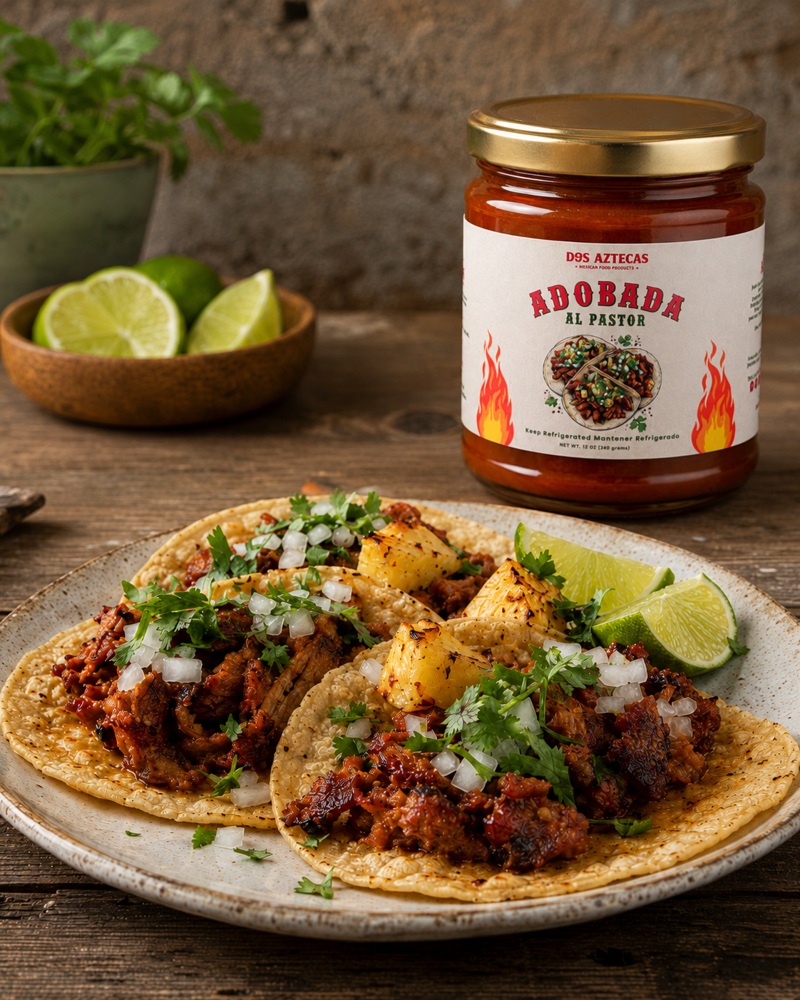

Smoky · Citrus · 12 oz
Carne Asada Marinade
Guajillo, puya, garlic, onion, and orange made for the grill.
$8.99
Collection 02
Deep chile flavor and carefully balanced spices turn everyday cuts into meals worth gathering around.

Smoky · Citrus · 12 oz
Guajillo, puya, garlic, onion, and orange made for the grill.

Bold · Traditional · 12 oz
Deep chile flavor, warm spices, and achiote inspired by al pastor.